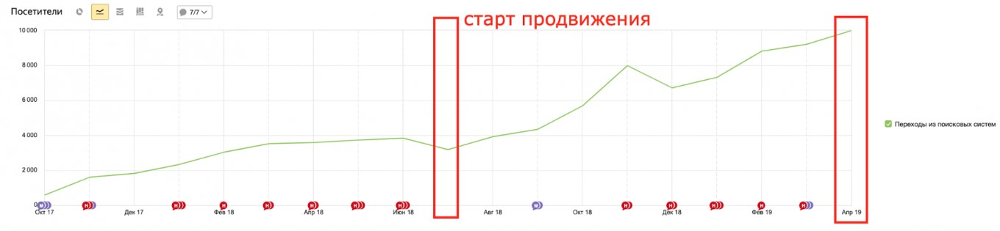
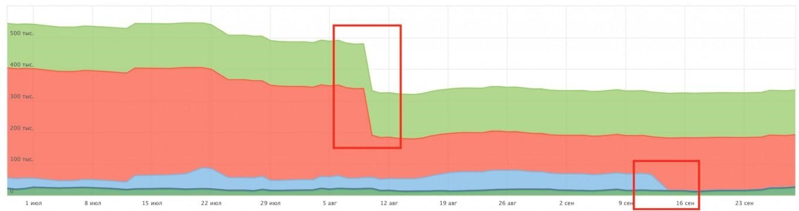
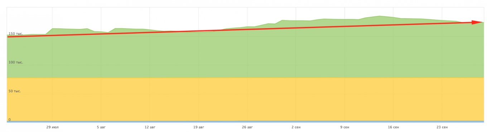
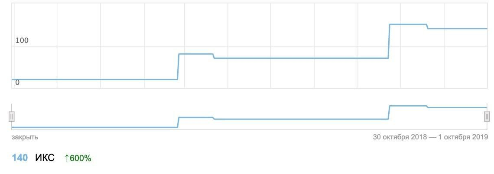
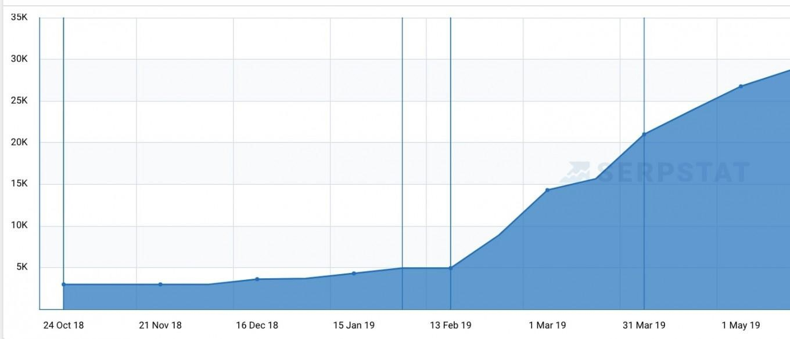

SEO магазина промышленного оборудования
от агентства Digital Upgrade — Одесса
Интернет-магазин промышленного оборудования
К нам обратился клиент, который занимается продажей промышленного оборудования. Мы начали продвижение проекта в середине июля 2018. До этого магазин сопровождался другим подрядчиком, динамика отсутствовала, что стало причиной недовольства со стороны клиента. Ссылочные работы, другие активные работы внутри сайта не выполнялись последние 3 месяца.
Задачи:
1. Увеличить поисковый органический трафик в 2 раза
2. Устранить технические проблемы
3. Разработать SEO требования и организовать расширение индекса фильтров каталога
Входные данные проекта:
- 20 000 – 50 000 страниц с недостаточно качественным контентом в Яндекс.Вебмастере
- Порядка 7 000 дублей страниц
- Низкая скорость загрузки сайта
- Отсутствие динамики роста органического поискового трафика в течение 5 последних месяцев
- Неправильная индексация страниц пагинации каталога
- Отсутствие мета-тегов на страницах фильтров
Какие работы были выполнены:
Этап 1. Определение стратегии продвижения:
В течение 1-го месяца продвижения были выполнены следующие работы:
- Выполнен полный технический аудит сайта (полный список того, что анализируем можно посмотреть тут);
- Анализ вебмастеров Яндекс и Гугл;
- Анализ выдачи, определена основная выборка конкуренто;
- Анализ стратегии продвижения конкурентов (структура, внутренняя оптимизация);
- Проведен анализ ссылочного профиля выборки конкурентов (определены доноры, ориентировочные расходы, график размещения);
- Подготовили выборку конкурентов в органике
- Собрали перечень доноров конкурентов
- Определили формат используемых ссылок
- Провели анализ траста выбранных доноров
- Провели визуальную оценку каждого сайта по чек-листу
- Проанализировали анкор-лист конкурентов
- Сформировали анкор-лист для размещений
- Определили порядок размещения
На основе полученных данных были определены 3 опорные точки стратегии продвижения:
- Расширение каталога в индексе. Доработка системы фильтров – создание статичных страниц фильтров с персонализированными автоматическими тегами, с созданием системы автоматического закрытия от индексации и сканирования ненужных страниц и комбинаций фильтров.
- Оптимизация страниц товаров. На базе конкурентов было определено, что существенная часть трафика идет не на подкатегории, а на товарные позиции.
- Ссылочный профиль.
Этап 2. Подготовка и запуск
Во-второй месяц работы с проектом были выполнены следующие работы:
По технической оптимизации:
После проведения аудита, мы подготовили и запустили в работу следующие задачи для команды программистов:
- ТЗ по устранению дублей страниц;
- ТЗ по созданию многоуровневой карты сайта .xml;
- ТЗ по микроразметке микроданных товара, хлебных крошек, контактов;
- ТЗ по увеличению скорости загрузки сайта;
- ТЗ по изменению файла robots.txt;
- ТЗ по исправлению хлебных крошек (устранение ошибок).
По семантическому ядру:
- Подготовлена 1-я итерация семантического ядра (детальнее про подготовку СЯ);
- Выполнена кластеризация и группировка запросов;
- Выполнено распределение запросов по страницам;
- Сформирована система отслеживания позиций.
По каталогу и структуре:
- Разработаны SEO технические требования для статичных страниц фильтров каталога;
- Разработаны требования для системы генерации шаблонов мета-тега – описание, title;
- Сформирован набор требований для файла robots – закрытие от сканирования, а также набор требований по закрытию от индексации определенных комбинаций фильтров;
- Сформирован набор требований для генерации многоуровневой карты сайта xml.
По внутренней оптимизации:
- Выведено ТЗ по текстовой оптимизации страницы карточки товара;
- ТЗ на оптимизацию title
- ТЗ на оптимизацию meta-описания
- ТЗ на оптимизацию заголовка h1
- ТЗ на оптимизацию текста страницы
- ТЗ на оптимизацию графических элементов страницы
- Выведено ТЗ по оптимизации страницы категории
- Подготовили и запустили ряд ТЗ по внутренней перелинковке товаров.
Этап 3. Внедрение функционала и внешние работы
Во-второй месяц работы с проектом были выполнены следующие работы:
Внедрение функционала:
- Внедрили систему статических страниц фильтров;
- Изменили карточки товаров;
- Внедрили систему перелинковки карточек товаров и категорий;
- Выведено новое ТЗ по внедрению страниц брендов.
Ссылочный профиль:
Стартовали ссылочные работы по проекту: размещение обзоров, статей и коммерческих ссылок по ранее разработанной ссылочной программе.
Семантическое ядро и структура сайта:
- Выполнена подготовка 2-й части семантического ядра (2-я итерация)
- Определены новые категории запросов
Результаты продвижения:
Ниже приводим данные из Яндекс.Метрики, Яндекс.Вебмастера, а также сервиса Серпстат.
Динамика поискового трафика:

Результаты:
Период продвижения: 8-9 месяцев
Результаты: рост трафика +300% с 3 000 до 10 000/мес
История индекса:

Результаты:
Сокращены 45 000 страниц низкого качества
Сокращены порядка 150 000 неканонических страниц
Динамика объема страниц категорий в индексе:

Результаты:
Увеличен объем проиндексированных страниц с 73000 до 95000 страниц.
Динамика роста ИКС по Яндексу:

Результаты:
Показатель ИКС вырос до 140 (*с учетом обновления алгоритма ИКС Яндексом)
Тренд по ключевым словам за 1 год по серпстату:

Три небольших тезиса вместо заключения:
- Про тех.работы. Наши разработчики, быстро и главное детально внедряли технические задания и предлагали альтернативы там, где выполнить что-то было невозможно.
- Про прогнозирование. Мы недооценили масштабы внедряемых изменений и необходимый ресурс программистов – внедрение функционала заняло больше времени, чем мы планировали.
- Про синхронизацию. В больших проектах – обратная связь и общее движение команды клиента и команды агентства – это часть успеха, всегда.
SEO от агентства Digital Upgrade Одесса.
Контакты:
(093) 438-6770